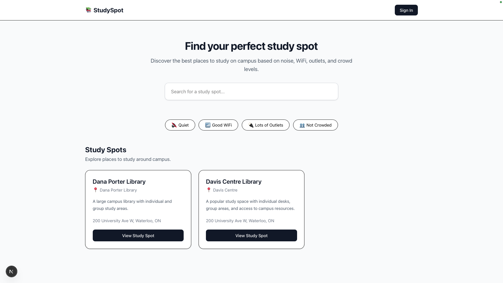
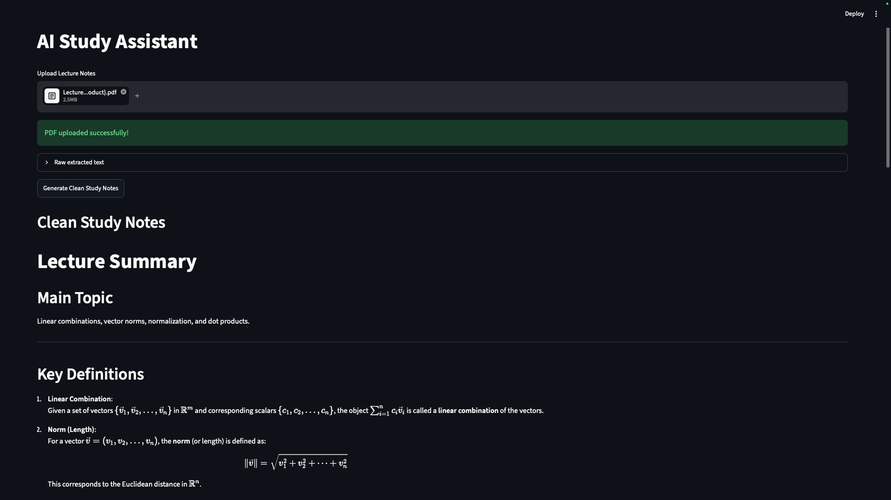

PROJECTS
Featured Work
A collection of engineering and software projects spanning full-stack development, AI, embedded systems, firmware, and data-driven applications.
Explore

Campus Study Spot Finder
Built a full-stack campus study-spot platform that helps students discover and review study spaces based on their preferences.
Implemented database-backed locations, preference-based search and filtering, dynamic study-spot pages, and Google Maps integration.
AI Study Assistant
Built an AI-powered study assistant that processes lecture PDFs to help students generate useful study material.
Implemented PDF text extraction, study-note generation, practice quiz generation, and context-aware Q&A using ChromaDB retrieval and locally hosted Ollama models.


WiFi Controlled RC Car
Completed a hands-on project during the Electrium Mobility Workshop by assembling and programming a WiFi-controlled RC car using an ESP8266 microcontroller.
Implemented wireless communication, PWM motor control, and servo mapping for responsive remote-controlled steering and navigation.
Automated Medicine Dispenser
Developed an STM32-based automated medicine dispenser achieving 99.5% dispensing accuracy across more than 200 test cycles.
Programmed embedded firmware to control motors, process sensor inputs, automate the dispensing sequence, and perform hardware debugging and reliability testing.